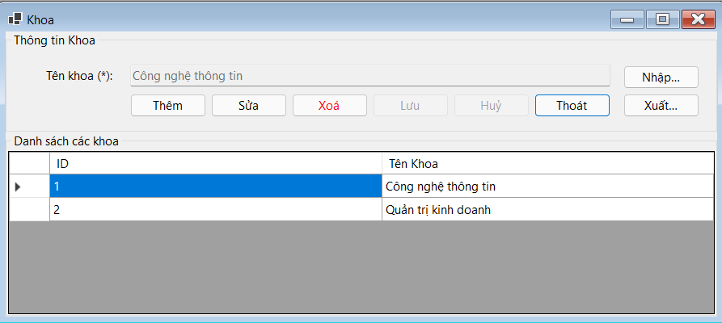

Hướng dẫn sử dụng màn hình Khoa.
Cách dùng: Chọn Dữ liệu: Nhấp chuột vào hàng trong DataGridView để chọn khoa cần sửa hoặc xóa, sửa Dữ liệu: Chọn hàng, nhấn Sửa, chỉnh sửa thông tin và nhấn Lưu, xóa Dữ liệu: Chọn hàng, nhấn Xóa và xác nhận, cập nhật DataGridView: Sau mỗi thao tác, nạp lại dữ liệu để cập nhật thông tin mới nhất.
Bước 1: Nhấn vào nút Thêm.
Bước 2: Các trường nhập liệu sẽ được kích hoạt. Xóa nội dung hiện tại nếu có.
Bước 3: Nhập tên khoa vào ô txtTenKhoa.
Bước 4: Nhấn vào nút Lưu để lưu khoa mới vào cơ sở dữ liệu.
Bước 5: Danh sách các khoa sẽ được tải lại và hiển thị khoa mới.
Bước 1: Chọn bản ghi cần chỉnh sửa từ bảng dữ liệu.
Bước 2: Nhấn vào nút Sửa.
Bước 3: Các trường nhập liệu sẽ được kích hoạt.
Bước 4: Sửa tên khoa trong ô txtTenKhoa theo ý muốn.
Bước 5: Nhấn vào nút Lưu để lưu các thay đổi vào cơ sở dữ liệu.
Bước 6: Danh sách các khoa sẽ được tải lại và hiển thị khoa đã chỉnh sửa.
Bước 1: Chọn bản ghi cần xóa từ bảng dữ liệu.
Bước 2: Nhấn vào nút Xóa.
Bước 3: Xác nhận việc xóa trong hộp thoại xác nhận.
Bước 4: Nếu xác nhận, bản ghi đã chọn sẽ bị xóa khỏi cơ sở dữ liệu.
Bước 5: Danh sách các khoa sẽ được tải lại và không còn hiển thị khoa đã xóa.
Bước 1: Nhấn vào nút Nhập.
Bước 2: Chọn tập tin Excel cần nhập trong hộp thoại mở tập tin.
Bước 3: Nhấn Open để bắt đầu quá trình nhập dữ liệu.
Bước 4: Dữ liệu từ tập tin Excel sẽ được đọc và nhập vào cơ sở dữ liệu.
Bước 5: Một hộp thoại xác nhận sẽ hiển thị thông báo nhập dữ liệu thành công và số lượng dòng đã nhập.
Bước 6: Danh sách các khoa sẽ được tải lại và hiển thị dữ liệu đã nhập.
Bước 1: Nhấn vào nút Xuất.
Bước 2: Chọn vị trí và tên tập tin trong hộp thoại lưu tập tin.
Bước 3: Nhấn Save để xuất dữ liệu ra tập tin Excel.
Bước 4: Một hộp thoại xác nhận sẽ hiển thị thông báo xuất dữ liệu thành công.